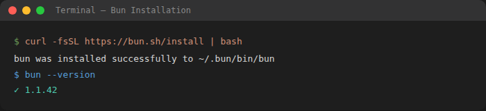
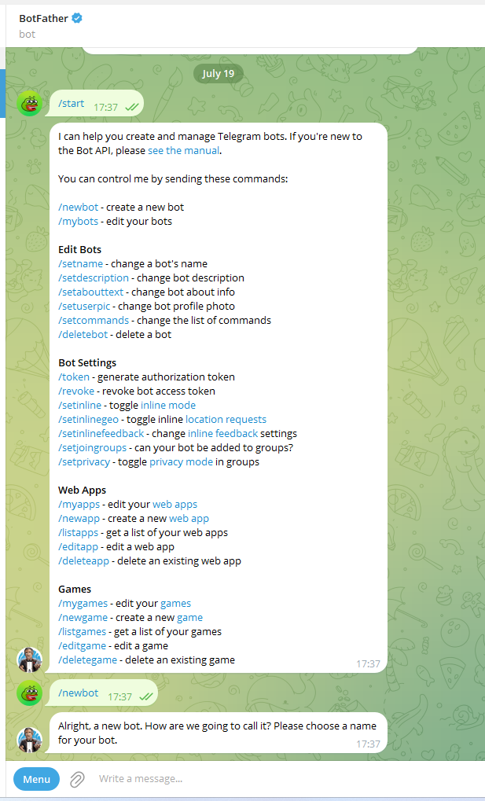
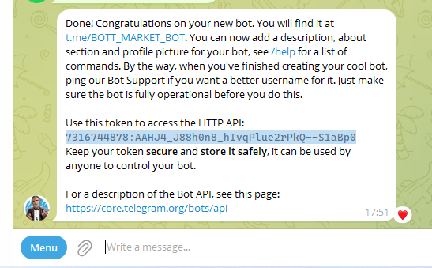
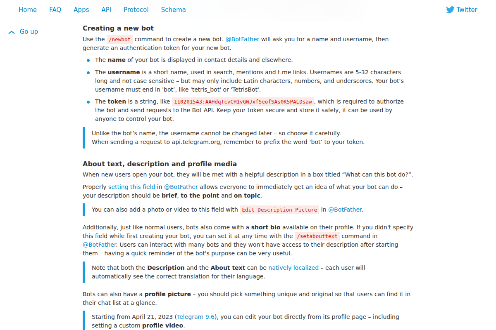
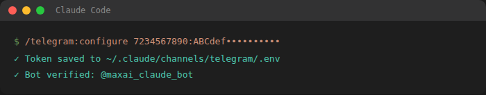

שלח הודעה בטלגרם — וקבל תשובה מהסוכן שלך, מכל מקום, 24/7
בסוף המדריך תוכל לשלוח הודעה בטלגרם — מהטלפון או מהמחשב — והסוכן שלך על השרת יקבל, יחשוב, ויענה. אותו סוכן שבנית, רק שעכשיו הוא נגיש לך בכל רגע.
תוסף מובנה של Claude Code. בלי לכתוב קוד. שולח הודעה → Claude Code עצמו עונה, עם כל הכלים והזיכרון. הכי קל.
ערכת 12-telegram-bot. שליטה מלאה והתאמה אישית — אבל יותר שלבים. בחר רק אם אתה רוצה בוט מותאם.
הכל רץ על השרת שלך. ודא שיש:
claude --versionהתקנת Bun (אם אין). בטרמינל של השרת:
curl -fsSL https://bun.sh/install | bash
סגור ופתח טרמינל חדש, ואז בדוק: bun --version

בדיקה מהירה של הכל בבת אחת — מהתיקייה הזו על השרת:
bash scripts/connect_telegram.sh
הסקריפט בודק גרסאות, Bun, והכי חשוב — אם Claude מאומת, ואומר לך מה חסר.
@BotFather ופתח אותו./newbot.bot (למשל maxai_assistant_bot).1234567890:ABCdef.... שמור אותו.

בשתי הדרכים, Claude חייב להיות מאומת על השרת. אל תשתמש ב-claude auth login הרגיל — מסך ההתחברות שלו דורש מסך אמיתי ונתקע על שרת מרוחק. במקום, השתמש בכלי המצורף:
python3 scripts/claude_connect.py start
יודפס לינק. פתח אותו בדפדפן (בכל מכשיר), התחבר עם המנוי שלך, ואשר. תקבל קוד בסגנון xxxx#yyyy — העתק אותו.
python3 scripts/claude_connect.py finish 'הקוד-שהעתקת'
python3 scripts/claude_connect.py test
claude_connect.py test עם ה-PONG הירוק.images/ וקרא לה auth_test_pong.png)בתוך Claude Code על השרת (הרץ claude), כתוב:
/plugin install telegram@claude-plugins-official
אם מתקבלת שגיאה "לא נמצא", הוסף קודם את המרקטפלייס:
/plugin marketplace add anthropics/claude-plugins-official

עקוב אחרי ההגדרה — בשלב מסוים תתבקש להדביק את ה-TOKEN מ-BotFather (שלב 2).

אם בחרת בבוט מותאם במקום Channels — השתמש בערכת 12-telegram-bot:
.env.example ל-.env.TELEGRAM_BOT_TOKEN (מ-BotFather) ואת TELEGRAM_CHAT_ID (מ-@userinfobot).systemd כדי שירוץ 24/7.הוראות מלאות בתוך הערכה. (גם דרך זו דורשת שלב 3 — אימות Claude.)
פתח את הבוט שלך בטלגרם ושלח לו הודעה (למשל "היי"). הוא אמור לענות.
images/telegram_working.png)כל כמה חודשים הטוקן של Claude פג, והבוט יחזיר שגיאה (לרוב מוזכר בה 401 / authentication). זה נורמלי ולוקח דקה לתקן — בדיוק כמו שלב 3:
python3 scripts/claude_connect.py start # פתח את הלינק, אשר, קח קוד python3 scripts/claude_connect.py finish 'הקוד' python3 scripts/claude_connect.py test # ודא PONG
python3 scripts/claude_connect.py check — מראה מתי הטוקן פג.| מה רואים | הפתרון |
|---|---|
| הבוט מחזיר שגיאת 401 / "authentication" | הטוקן של Claude פג. הרץ שלב 7 (start → finish → test). |
claude_connect.py test לא מחזיר PONG | חזור על start → finish עם קוד טרי. ודא שאתה מחובר עם החשבון הנכון. |
| "הקוד פג" / החילופין נכשלו | הקוד חד-פעמי ופג תוך דקות. הרץ start שוב וקח קוד חדש מהר. |
| "command not found: bun" | סגור ופתח טרמינל חדש אחרי התקנת Bun. אם עדיין — התקן שוב (שלב 1). |
| "/plugin install" לא נמצא | גרסת Claude ישנה. עדכן ל-2.1.80+, או הוסף קודם את ה-marketplace (שלב 4). |
| הבוט לא עונה בכלל | ודא שהשרת דולק, ש-Claude מאומת (check), ושה-TOKEN הודבק נכון. |
scripts/claude_connect.py · שאלות? פנה במסגרת תכנית הליווי.